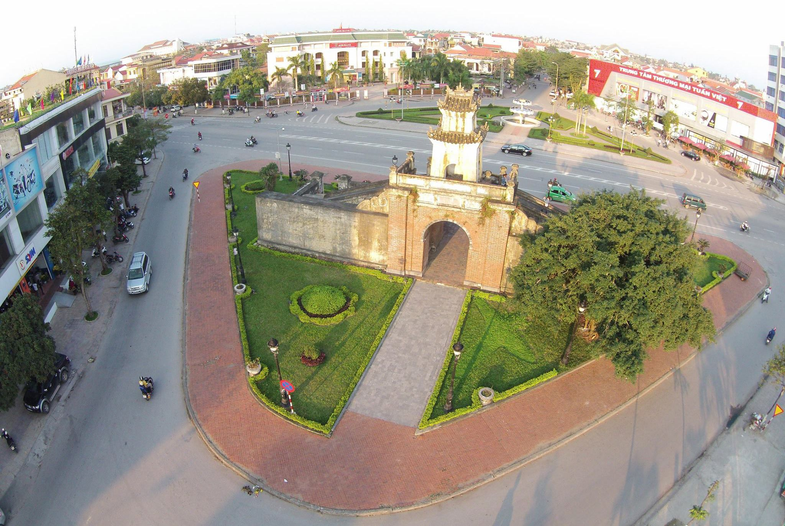
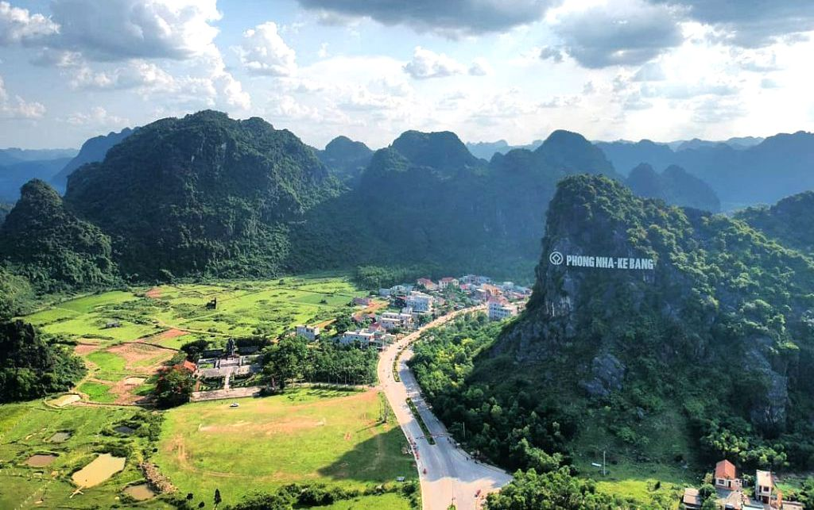
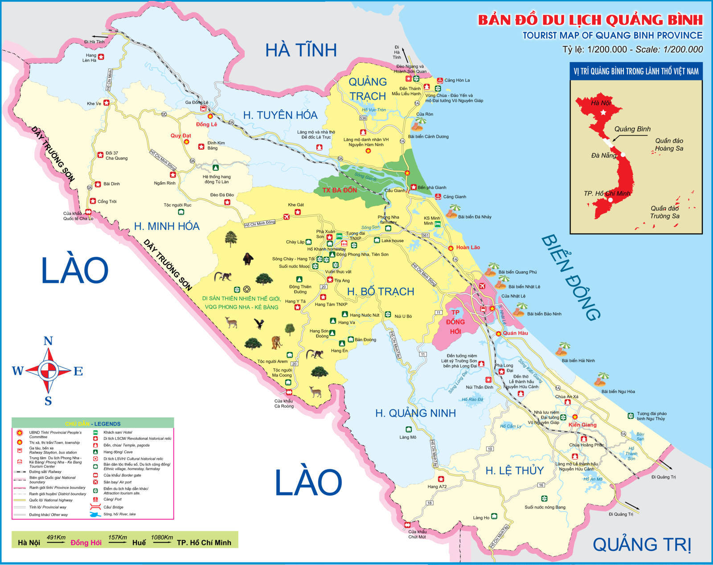
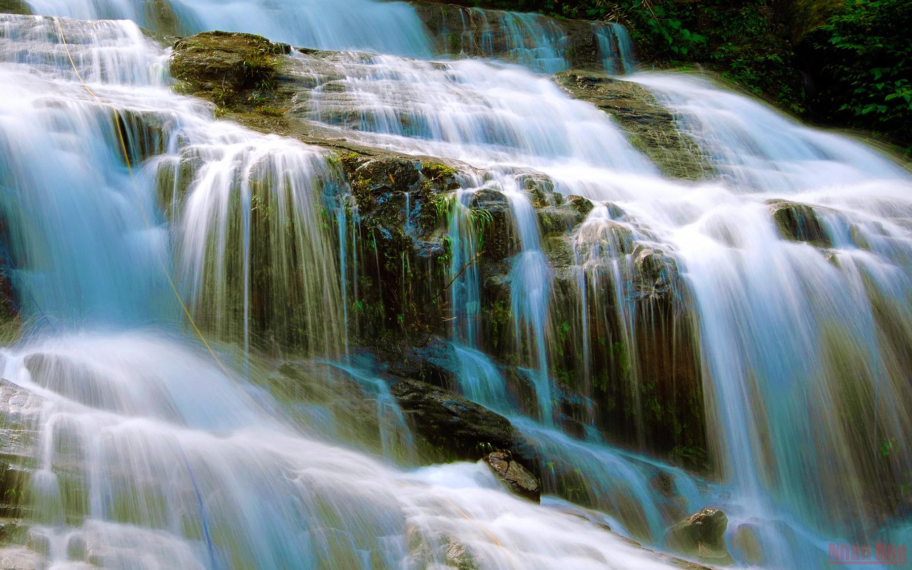

Địa điểm du lịch

Quảng Bình Quan

Động Phong Nha

Đá nhảy

Quảng Bình quanh năm mưa, nắng, gió,
Vẫn còn nghèo với nhiều nỗi âu lo.
Nhưng tình người thì chẳng thước nào đo.
Trọn vẹn lắm như câu hò ví dặm
|  |
- Toạ độ địa lý ở phần đất liền là:
- Tỉnh có bờ biển dài 116,04 km ở phía Đông và có chung biên giới với Lào 201,87 km ở phía Tây - Khí hậu: Quảng Bình nằm ở vùng nhiệt đới gió mùa và luôn bị tác động bởi khí hậu của phía Bắc và phía Nam và được chia làm hai mùa rõ rệt: mùa mưa từ tháng 9 đến tháng 3 năm sau, Mùa khô từ tháng 4 đến tháng 8 với nhiệt độ trung bình 24oC - 25oC. |
|
 |
HOÀNG NGỌC MINH PHƯƠNG